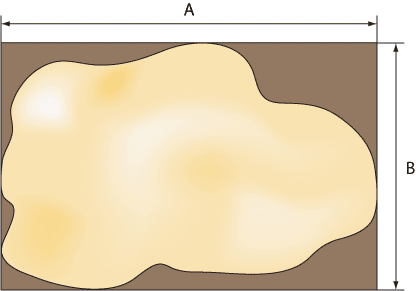

Допущения
Для упрощения расчетов некоторые реальные величины заменяются их приближенным аналогом, которые хотя и влияют на точность результата, находятся в пределах допустимой погрешности вычисления.
Размер пустыни
Известно, что пустыня обладает неправильной формой, которую принимаем прямоугольной. Это достигается одним из двух способов — включением частей, выходящих за пределы области пустыни (рис. 1) или их отбрасыванием (рис. 2).

Рис. 1. Пустыня располагается внутри прямоугольной области

Рис. 2. Часть пустыни располагается за пределами прямоугольника
В первом случае (рис. 1) повышается точность результата, поскольку вся пустыня входит в область поиска. Во втором случае (рис. 2) повышается быстрота расчетов за счет сокращения граничных частей области поиска.
За размер пустыни будем принимать величины A и B.
Размер льва
Для простоты расчетов габариты льва следует брать максимальными и включать в них хвост с кисточкой, гриву и даже усы (рис. 3). Чем больше размеры льва, тем на меньшее количество дискретных областей придется разделить пустыню. С другой стороны уменьшение габаритов повышает точность поиска льва (рис. 4).

Рис. 3. Максимальные размеры льва для быстрого поиска

Рис. 4. Минимальные размеры льва для точного поиска
За размеры льва будем принимать величины W, H, L, где W — ширина льва, H — его высота, а L — длина.
Размер клетки
Задача поимки льва сводится к помещению животного в клетку. Гипотетически можно выполнить клетку размером с пустыню, опустить ее сверху и решить поставленную задачу. Однако создать клетку подобных размеров не представляется возможным, поэтому мы должны исходить из реальных факторов и делать клетку, несколько превышающей размерами льва (рис. 5).

Рис. 5. Размеры клетки
Желательно, чтобы ширина и длина клетки были кратные значениям A и B. Таким образом, всю пустыню можно поделить на ряд дискретных областей, размеры которых совпадают с размерами нашей клетки.
Положение льва
Во всех случаях положение льва считается стационарным. Во время поиска животное остается на своем месте и не перемещается до его поимки в клетку.